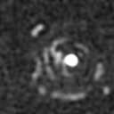
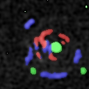
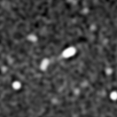
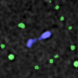
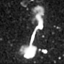
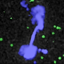
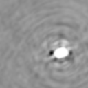
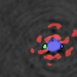
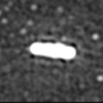
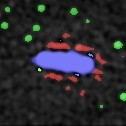

Radio Tiramisu
Tiramisu model for semantic segmentation in radio astronomy
An application of the semantic segmentation model Tiramisu to radio astronomy. This represents the first attempt to applying segmentation models to radio astronomy, as typical state-of-the-art approaches exploit object detection methods.
Results show that this approach performs better than object-detection-based methods, providing a more accurate segmentation of the radio sources.









